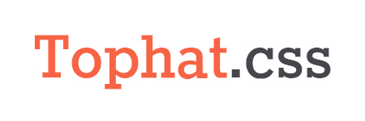
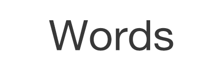

Tophat is my CSS framework designed to fit my front-end needs with simplicity all over the place.

Words is my markdown text editor with offline capabilities. Inspired by my favorite text editor, Byword